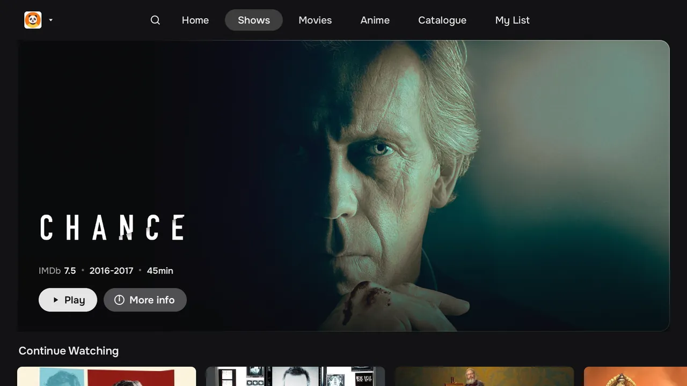
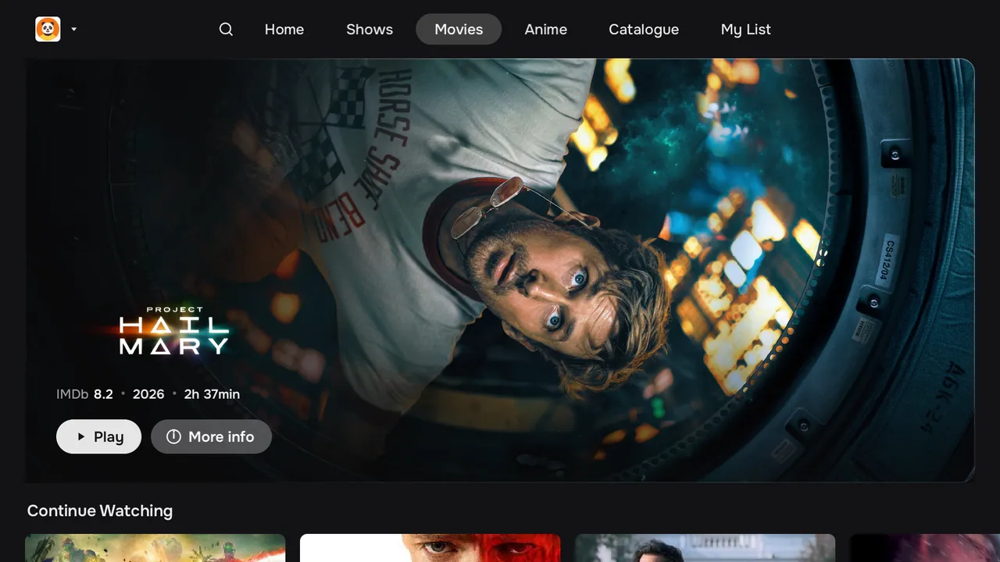
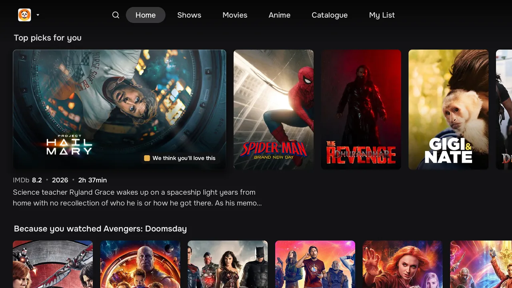
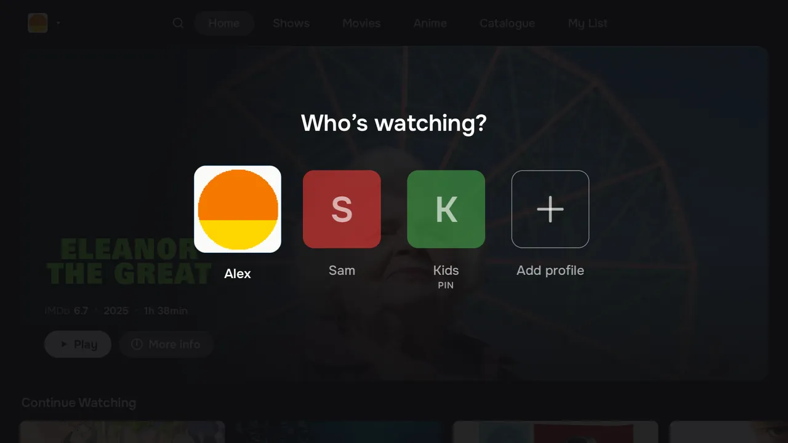
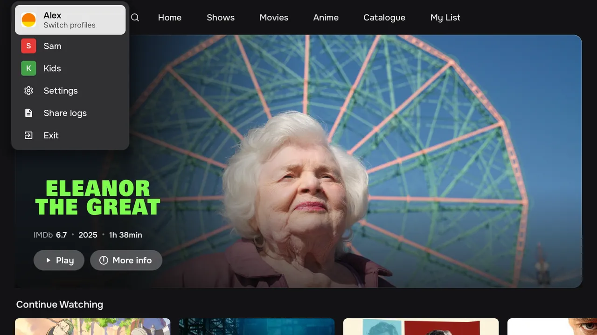
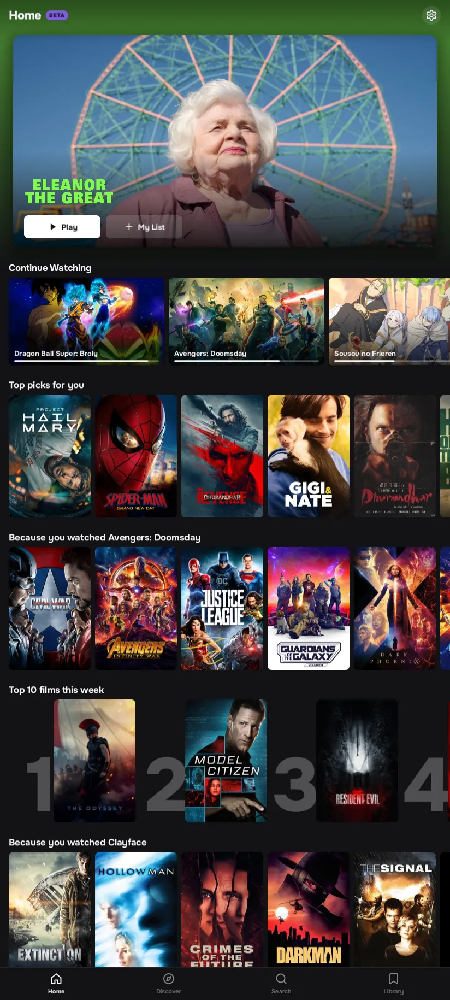

Shows tab
A billboard, then rows picked for you, such as Watch again and Binge-worthy.
Version 3.0.0 · Free and open source under GPL-3.0
Free, native app for your own Stremio and Nuvio accounts and addons, on LG, Android TV, Fire TV, Windows and phones. The LG package is 5.5 MB.

5.5 MB
The LG package is 5.5 MB.
0.5 s
On an LG C1, Home’s first row of pictures is ready about half a second after Home opens.
300 to 150 MB
Posters stay compressed in memory. On the same TV, peak memory in our poster test fell from about 300 MB to about 150 MB in 3.0.0.
Every screen is drawn by the app itself in C, with no browser engine inside.
Rows fetch their titles only as you get near them.
Runs on
Home, Shows, Movies, Anime and Catalogue. Shows and Movies can use For You: about 36 rows built from what you watch, which needs your own free TMDB key.

A billboard, then rows picked for you, such as Watch again and Binge-worthy.

The same layout for films. Without For You you get Cinemeta’s rows.

Off until you turn it on in Settings, Appearance. Its rows come from AniList.

Your collections and every catalogue your addons offer.
Rest on a card and it opens wide. A short clip or trailer from IMDb plays in it, or you can turn previews off.

Open a title to see its details, its cast and its reviews.

Origin ships empty: you bring your own account and addons. Sign in to Stremio or Nuvio with a QR code or email, or keep both signed in and switch under Settings, Account. Each keeps its own library and addons.

Add a profile from the picker, up to Nuvio’s limit of 6.

Choose your picture in the top bar to change profile.
This video is from version 2.0.0, when the app was called Better Stremio. It runs 78 seconds.
webOS 3 or later. The package is a 5.5 MB .ipk.
The easiest way. In its Settings add https://betterstremio.github.io/webos/apps.json, then install and update from there.
Install the .ipk yourself.
Android 7.0 or later.
For most devices.
For Fire TV sticks and older boxes.
The Downloader app can fetch the file.
Get the Android TV APK
An 11.8 MB APK for phones and tablets. It is a beta.
Get the phone beta APKWindows 10 or 11, 64-bit. A 44.9 MB setup that needs no admin prompt, or a 59.7 MB portable zip.
The files are not code-signed, so SmartScreen says unknown publisher: choose More info, then Run anyway. Each file is scanned with Microsoft Defender.
Get the Windows installerTizen 4 or later. A 7.4 MB .tpk, installed with Apps2Samsung in Developer Mode. It has not yet been run on a Samsung TV.
It builds on Stremio Origin’s Samsung port, which works best on TVs from about 2018 to 2020.
What you do depends on the version you have and the device.
From 3.0.0 the app id is io.github.betterstremio.origin, so Origin and Stremio Origin no longer replace each other and both can be on one TV.
The update installs the new app and opens it. On first start it copies your sign-in, profiles and settings from the old Origin, then removes the old app. Android asks once to confirm.
3.0.0 installs beside the old app. Open it once and it imports the same way.
The app updates to 2.1.12 first, then to 3.0.0. Installing 3.0.0 by hand on Android means signing in again.
Origin only imports from its own older versions. It never touches Stremio Origin’s data.